How Heterogeneity Impacts Learning
Hossein Alidaee
Northwestern University
Motivation
Where do we get info about new technologies?
Information critical for adoption (Rogers, 1962; Jensen, 2010)
Where do we get this information?
Two common sources: authorities and peers
Authorities spend a lot on data
India spends $1.3B on public Ag R&D (IFPRI ASTI, 2022)
2014 Maputo Declaration: 10% of total national spending
Tested rigorously
Often tested centrally, i.e. university, research center, etc..
Peers have sparse data
Conduct limited testing
Testing vulnerable to shocks
Context is well known
Setting: Agricultural Technology Adoption
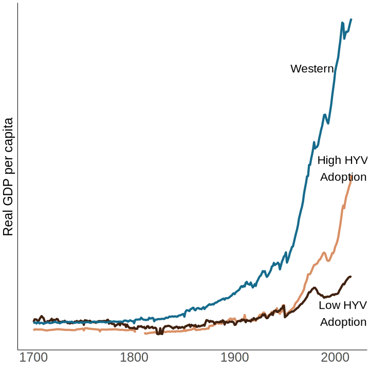
- \(2^{\text{nd}}\) divergence via Green Revolution (Huang, 2020)
- Key friction for AgTech (Magruder, 2018)
- Optimizing social learning is expensive (Breza et al., 2021)
- Maybe even futile (Akbarpour et al., 2020)
Today: Uncertainty About Context
Standard view of these signals:
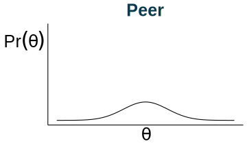
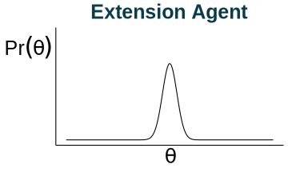
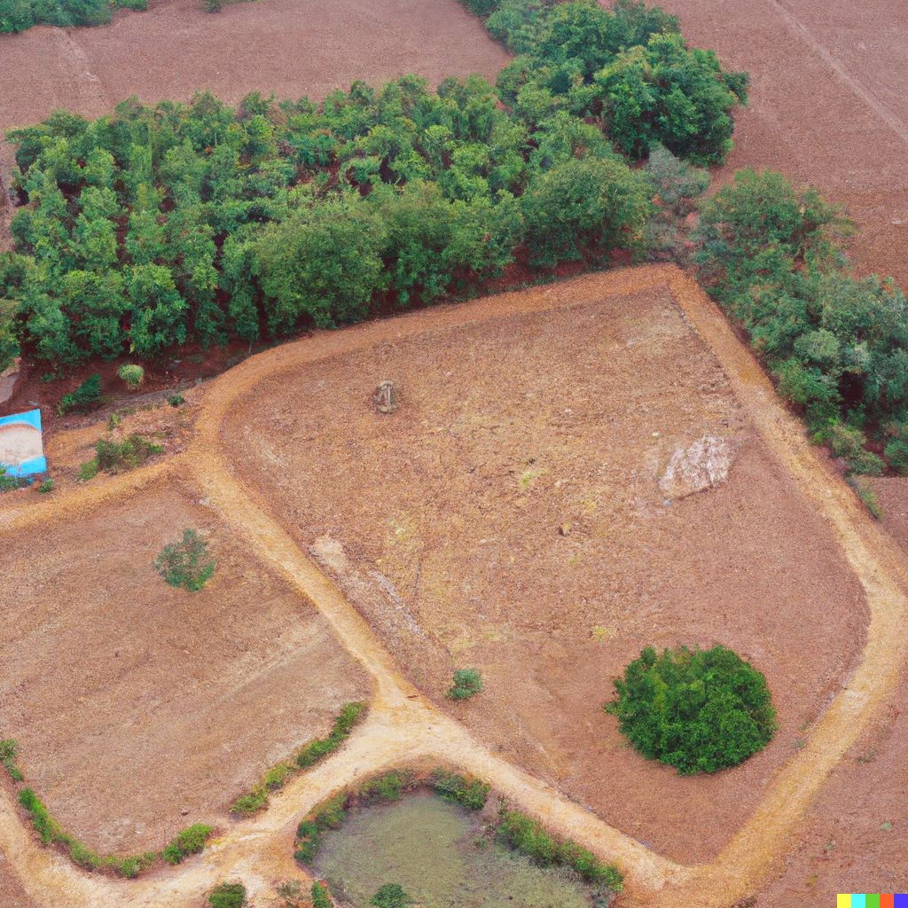
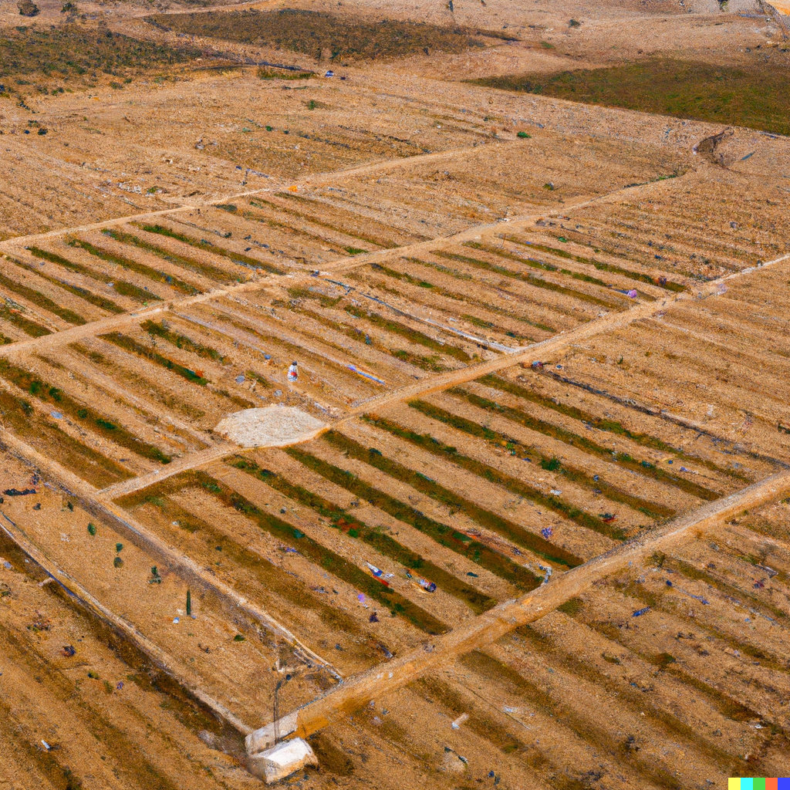
Today: Uncertainty About Context
Proposed view:
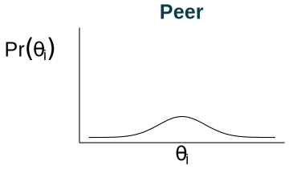
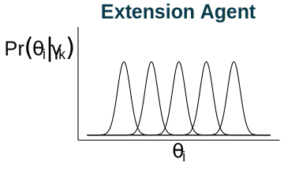
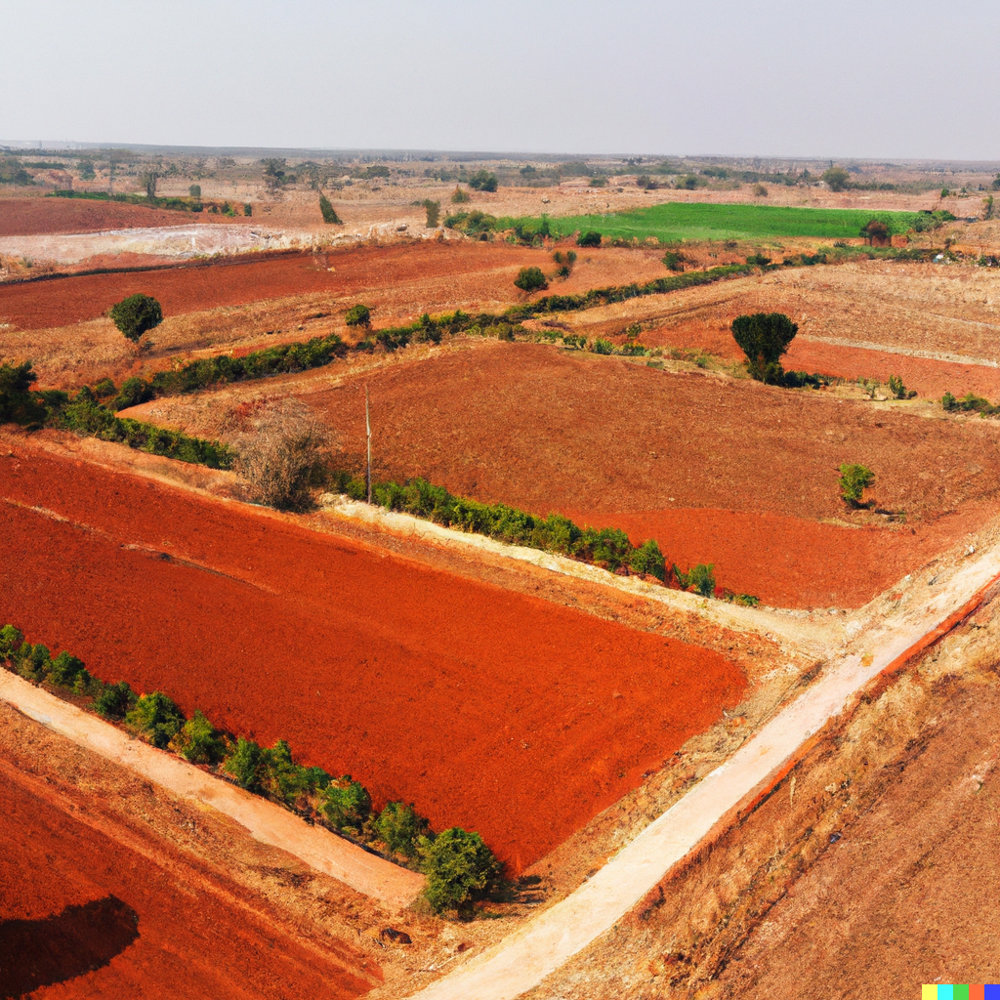
Related Literature
- Decision makers as statisticians
- Steiner and Stewart (2008), Olea et al. (2021), Salant and Cherry (2020), etc..
- Social learning theory
- Sethi and Yildiz (2016), Dasaratha et al (2022), Bala and Goyal (1998), etc…
- Information provision experiments
- Jensen (2010), Chetty and Saez (2013), Binder (2020), etc…
- Role of heterogeneity in agents’ responses to information
- Armour (2018),
- Role of trust in agents’ responses to information
- asdf
- Agricultural technology adoption
- asdf
- Agricultural extension design
- asdf
Roadmap
Today:
- Propose a foundation for mechanism
- Provide experimental design
- Present results
- Discuss external validity
- Implications for farmers and policymakers
- Upcoming extensions
Microfoundation
A Stylized Model
A farmer is:
- risk-averse
- Bayesian
- deciding between a traditional vs high-yield seed
The unknown gain from the high yield seed is heterogeneous: \[\theta_i = \underbrace{\theta \vphantom{\gamma_i} }_{\text{average return}} + \underbrace{\gamma_i}_{\text{context adjustment}}\]
Sources of Context Heterogeneity
Why is context \(\gamma_j\) heterogeneous?:
- Agriculture
- Soil composition
- Climate
- Opportunity costs
- Microfinance
- Credit constraints, business experience, baseline profits
- Health
- Age, comorbidities, genetic profile
Context Impacts Signals
With homogeneity, a friend \(j\) shares a noisy signal: \(\theta + \epsilon_j\).
But, we have heterogeneity.
Instead, friend \(j\) shares signal \(s_j = \theta + \gamma_j + \epsilon_j\).
Without more info, this is a signal about \(\theta_j\).
Agent cares about \(\theta_i = \theta + \gamma_i\).
What is known about context?
Each farmer \(j\) has their own \(\gamma_j \sim \mathcal{N}\left(0, (\sigma_j^\gamma)^2\right).\)
\(\gamma_j\) is farmer \(j\)’s context.
\(\sigma_j^\gamma\) is the context uncertainty.
How an Agent Adjusts for Context
How does sharing context \(\gamma_j\) impact learning?
Consider estimating \(\theta_i\) with context uncertainty:
Knowing \(\gamma_j\) allows perfect adjustment:
Adjusted Signal Structure
We can think of context adjustment as signal adjustment.
Let \(\hat{\gamma}_j\) denote belief about \(\gamma_j\).
Because \(\epsilon_j\) and \(\hat{\gamma}_j\) are independent Gaussians, \[ s_j^A \sim \mathcal{N}(\theta + \gamma_i, \sigma_j^2 + (\sigma_j^\gamma)^2) \]
Our Agent’s Posterior
Using information from all sources, farmer \(i\) believes
\[ \tilde{\theta_i} \sim \mathcal{N}\left(\tilde{\mu}, \tilde{\sigma}_0^2\right) \]
where \[ \tilde{\mu} = \tilde{\sigma}_0^2 \left(\frac{0}{\tilde{\sigma}_0^2} + \frac{s_E^A}{\sigma_E^2 + (\sigma_E^\gamma)^2} + \sum_{j_\in {1, \ldots, n}} \frac{s^A_j}{\sigma_j^2 + (\sigma_j^\gamma)^2}\right) \]
and \[ \tilde{\sigma}_0^2 = \left(\frac{1}{\tilde{\sigma}_0^2} + \frac{1}{\sigma_E^2 + (\sigma_E^\gamma)^2} + \sum_{j_\in {1, \ldots, n}} \frac{1}{\sigma_j^2 + (\sigma_j^\gamma)^2}\right)^{-1}. \]
The Farmer’s Decision
Problem: \[ \operatorname*{argmax}_\alpha E[U(\alpha \cdot \theta_i ) | s_1, \ldots s_n, s_E] \]
Decision: Fraction of investment \(\alpha\)
Belief: Posterior \(\tilde{\theta}_j\)
Preferences: Risk averse so \[ \operatorname{E}[U(\alpha \theta_i)] \leq U(\alpha \operatorname{E}[\theta_i]). \]
Less Context → Less Investment
Consider a strictly risk averse agent with utility \(U\) solving \[ \operatorname*{argmax}_\alpha E[U(\alpha \cdot \theta_i ) | s_1, \ldots s_n, s_E]. \] The agent’s optimal level of adoption \(\alpha^*\) is decreasing in context uncertainty from any signal.
Sampling and Context Precision Are Complements
Consider a strictly risk averse agent with DARA utility \(U\) solving \[ \operatorname*{argmax}_\alpha E[U(\alpha \cdot \theta_i ) | s_1, \ldots s_n, s_E]. \] For any signal \(s_j\), the agent’s optimal level of adoption \(\alpha^*\), given a level of sampling precision \(1/\sigma_j^2\), is increasing in context precision \((1/\sigma_j^\gamma)^2\) from that signal.
Model Recap
- Heterogeneity can cause uncertainty about context
- Context uncertainty adds to signal noise
- Context certainty can be adjusted for
- Hypothesis 1: Higher context uncertainty reduces adoption if risk averse
- Hypothesis 2: Sampling and context precision are complements under DARA
Lab Experiment Design
Overview
- Lab-in-the-field experiment in rural Odissa
- 1,600 small and marginal farmers
- Decide whether to adopt a hypothetical technology
- Receive noisy signals from fictional characters
- Vary only context uncertainty
- Choose adoption level
Signals As Likert Scales
Everyone is learning about their \(\theta_j\)
Report experience using an emoji Likert scale
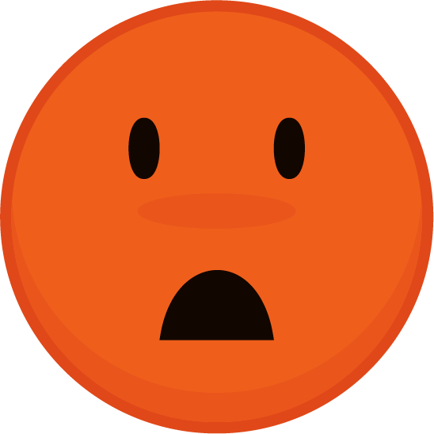
Each signal \(s_j\) is shared only with the participant
Contexts As Types
Characters are one of two types: orange or blue
The participant is the orange type
Type is a summary of all dimensions of context
\(\theta_O\) and \(\theta_B\) are homogenous
Introducing Sampling Error
Even within type, \(s_j\) are not identical
Reflects idiosyncratic risk
Drawn from \(\theta_O + \epsilon\) or \(\theta_B + \epsilon\)
Error \(\epsilon\) is identical and independent
Learning From Blue Types
Blue type always does worse
Provide story about rainwater catchment
Difference of two Emoji

What We Have So Far
So far, our game looks like this:
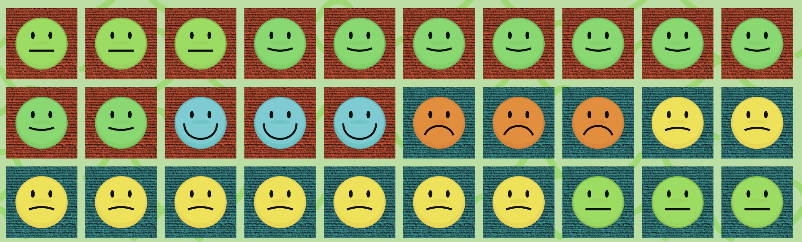
Where’s the context uncertainty?
Where’s the decision making?
Adding Context Uncertainty
Some characters have unknown type
They appear as gray
Could be either type
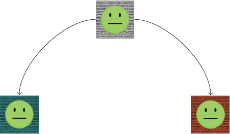
Deciding Adoption Intensity
Land divided into 10 rows
Must decide adoption maximizing yield
Mapped to Likert Scale
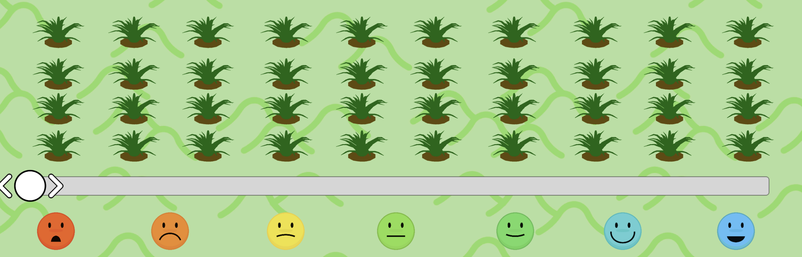
Bringing it all together
Player sees information and decides adoption level


Process and Randomization
- Survey participant
- Read game script
- Practice module
- Game modules
- Randomize round order via matched quartets
- Randomize technology order
- Randomize village name order
- Payout
Results
Testing Context Uncertainty Aversion
Overviewing Agricultural Extension
Traditional Extension Design Is Centralized
Big % of govermment ag budget (Akroyd and Smith, 2007)
Centralized testing of technologies
Centralized training of extension agents
Extension agents relay knowledge to farmers
We Know What Works Better
Decentralized Learning (Krishnan and Patnam, 2013; Takahashi, Mano, and Otsuka, 2019)
Farmer Field Days (Dar and Emerick, 2021)
Season-long Demonstration Plots (Maertens, Michelson, and Nourani, 2020)
Seed Centrality (Banerjee, Chandrasekhar, Duflo, and Jackson, 2013; Shikuku, 2019)
Opinion Leader Superiority (Feder and Savastano, 2006)
Demonstration Plot Centrality (Dar, Emerick, de Janvry, Kelley, and Sadoulet, 2020)
Direct Contact Farmer Training (Kondylis, Mueller, and Zhu, 2017)
ICT Reduction of Temporal Lag (Cole and Fernando, 2021)
Many more!
It’s Unclear We Know Why
Some potential mechanisms:
- Sample size
- Centrality
- Social influence
- Homophily
None are broadly consistent with the literature
- Program design more effective when mechanism is known
- RCTs have difficulty isolating mechanisms
What works and why?
| Sample Size | Centrality | Social Power | Homophily | Context | |
|---|---|---|---|---|---|
| Decentralized Learning | |||||
| Field Days | |||||
| Season-long Demonstration Plots | |||||
| Seed Centrality | |||||
| Opinion Leader Superiority | |||||
| Demonstration Plot Centrality | |||||
| Direct Contact Farmer Training | |||||
| ICT to Reduce Temporal Lag |
What works and why?
| Sample Size | Centrality | Social Power | Homophily | Context | |
|---|---|---|---|---|---|
| Decentralized Learning | ✗ | ||||
| Field Days | |||||
| Season-long Demonstration Plots | |||||
| Seed Centrality | |||||
| Opinion Leader Superiority | |||||
| Demonstration Plot Centrality | |||||
| Direct Contact Farmer Training | |||||
| ICT to Reduce Temporal Lag |
What works and why?
| Sample Size | Centrality | Social Power | Homophily | Context | |
|---|---|---|---|---|---|
| Decentralized Learning | ✗ | ||||
| Field Days | |||||
| Season-long Demonstration Plots | |||||
| Seed Centrality | ✓ | ||||
| Opinion Leader Superiority | |||||
| Demonstration Plot Centrality | ✗ | ||||
| Direct Contact Farmer Training | |||||
| ICT to Reduce Temporal Lag |
What works and why?
| Sample Size | Centrality | Social Power | Homophily | Context | |
|---|---|---|---|---|---|
| Decentralized Learning | ✗ | ||||
| Field Days | ✗ | ||||
| Season-long Demonstration Plots | |||||
| Seed Centrality | ✓ | ✓ | |||
| Opinion Leader Superiority | ✗ | ||||
| Demonstration Plot Centrality | ✗ | ✗ | |||
| Direct Contact Farmer Training | |||||
| ICT to Reduce Temporal Lag |
What works and why?
| Sample Size | Centrality | Social Power | Homophily | Context | |
|---|---|---|---|---|---|
| Decentralized Learning | ✗ | ✓ | |||
| Field Days | ✗ | ||||
| Season-long Demonstration Plots | |||||
| Seed Centrality | ✓ | ✓ | ✗ | ||
| Opinion Leader Superiority | ✗ | ✓ | |||
| Demonstration Plot Centrality | ✗ | ✗ | |||
| Direct Contact Farmer Training | |||||
| ICT to Reduce Temporal Lag |
What works and why?
| Sample Size | Centrality | Social Power | Homophily | Context | |
|---|---|---|---|---|---|
| Decentralized Learning | ✗ | ✓ | ✓ | ||
| Field Days | ✗ | ✓ | |||
| Season-long Demonstration Plots | ✓ | ||||
| Seed Centrality | ✓ | ✓ | ✗ | ✓ | |
| Opinion Leader Superiority | ✗ | ✓ | ✓ | ||
| Demonstration Plot Centrality | ✗ | ✗ | ✓ | ||
| Direct Contact Farmer Training | ✓ | ||||
| ICT to Reduce Temporal Lag | ✓ |
Recap
- Growth requires higher agtech adoption
- Traditional extension design is centralized
- Many RCTs improving extension design
- Mechanisms aren’t yet well identified
- Context certainty explains a broad set of results
Experimental Variation
Within Variation:
- % of Gray Tiles
Across Variation:
- Round Order
- Village, Tech
Constant:
- Blue/Orange Ratio
- Signal distribution
Estimation
\[\begin{align} \text{Adoption Level}_{ij}=\beta_H \mathbb{1}(\text{High Type Uncertainty}) + \\ \beta_G \text{Game Controls} + \beta_D \text{Demographic Controls} \end{align}\]Game Controls:
- Round Number
- Technology
- Village
Demographic Controls:
- Age
- Household Size
- Income
- Education
- Game Behavior
Testing Complementarity
The value of an additional observation by the sender of the signal (i.e. observing \(M + 1\) instead of \(M\) farms) is increasing in context precision \(\left(1/\sigma_i^\gamma\right)^2\).

Control Modules
Additional modules for:
- Practice rounds
- Ability to translate across types
- Bounding heuristic behavior
Context Reduces Risk
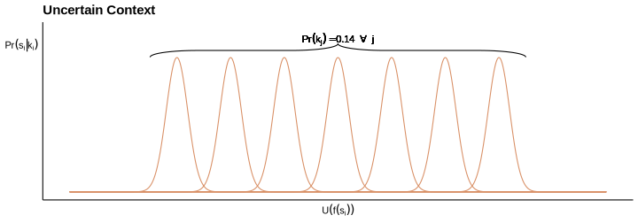
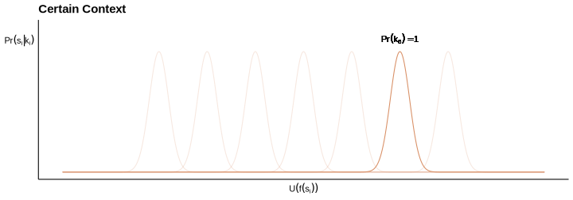
Conclusion
Potential Implications
Potential lessons:
- Info campaigns should provide specific returns
- Information campaigns should disaggregate returns
- Distributed, local experimentation could increase trust
- Insurance with low basis-risk, when tied to experimentation, can have high positive externalities
- Reinforces Oates (1972, 1999) argument in favor of decentralization
Future area of study
- Barriers to signal translation
- Specific vs disaggregated signals
Social Learning: Less Data, Same Results
Despite data gap, peers are just as influential
Implies social learning is more effective per data point
Natural questions: